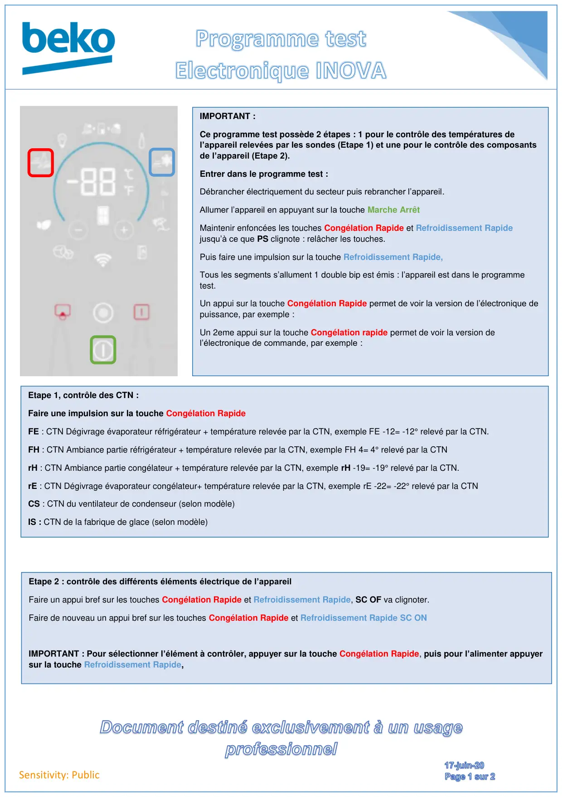
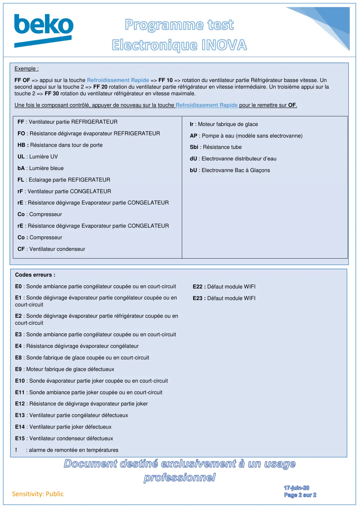

Prog Test Froid Electronique Inova

Sensitivity: PublicIMPORTANT :Ce programme test possède 2 étapes : 1 pour le contrôle des températures del’appareil relevées par les sondes (Etape 1) et une pour le contrôle des composantsde l’appareil (Etape 2).Entrer dans le programme test :Débrancher électriquement du secteur puis rebrancher l’appareil.Allumer l’appareil en appuyant sur la touche Marche ArrêtMaintenir enfoncées les touches Congélation Rapide et Refroidissement Rapidejusqu’à ce que PS clignote : relâcher les touches.Puis faire une impulsion sur la touche Refroidissement Rapide,Tous les segments s’allument 1 double bip est émis : l’appareil est dans le programmetest.Un appui sur la touche Congélation Rapide permet de voir la version de l’électronique depuissance, par exemple :Un 2eme appui sur la touche Congélation rapide permet de voir la version del’électronique de commande, par exemple :Etape 1, contrôle des CTN :Faire une impulsion sur la touche Congélation RapideFE : CTN Dégivrage évaporateur réfrigérateur + température relevée par la CTN, exemple FE -12= -12° relevé par la CTN.FH : CTN Ambiance partie réfrigérateur + température relevée par la CTN, exemple FH 4= 4° relevé par la CTNrH : CTN Ambiance partie congélateur + température relevée par la CTN, exemple rH -19= -19° relevé par la CTN.rE : CTN Dégivrage évaporateur congélateur+ température relevée par la CTN, exemple rE -22= -22° relevé par la CTNCS : CTN du ventilateur de condenseur (selon modèle)IS : CTN de la fabrique de glace (selon modèle)Etape 2 : contrôle des différents éléments électrique de l’appareilFaire un appui bref sur les touches Congélation Rapide et Refroidissement Rapide, SC OF va clignoter.Faire de nouveau un appui bref sur les touches Congélation Rapide et Refroidissement Rapide SC ONIMPORTANT : Pour sélectionner l’élément à contrôler, appuyer sur la touche Congélation Rapide, puis pour l’alimenter appuyersur la touche Refroidissement Rapide,
1 / 2
Sensitivity: PublicExemple :FF OF => appui sur la touche Refroidissement Rapide => FF 10 => rotation du ventilateur partie Réfrigérateur basse vitesse. Unsecond appui sur la touche 2 => FF 20 rotation du ventilateur partie réfrigérateur en vitesse intermédiaire. Un troisième appui sur latouche 2 => FF 30 rotation du ventilateur réfrigérateur en vitesse maximale.Une fois le composant contrôlé, appuyer de nouveau sur la touche Refroidissement Rapide pour le remettre sur OF.FF : Ventilateur partie REFRIGERATEURFO : Résistance dégivrage évaporateur REFRIGERATEURHB : Résistance dans tour de porteUL : Lumière UVbA : Lumière bleueFL : Eclairage partie REFIGERATEURrF : Ventilateur partie CONGELATEURrE : Résistance dégivrage Evaporateur partie CONGELATEURCo : CompresseurrE : Résistance dégivrage Evaporateur partie CONGELATEURCo : CompresseurCF : Ventilateur condenseurIr : Moteur fabrique de glaceAP : Pompe à eau (modèle sans electrovanne)Sbi : Résistance tubedU : Electrovanne distributeur d’eaubU : Electrovanne Bac à GlaçonsCodes erreurs :E0 : Sonde ambiance partie congélateur coupée ou en court-circuitE1 : Sonde dégivrage évaporateur partie congélateur coupée ou encourt-circuitE2 : Sonde dégivrage évaporateur partie réfrigérateur coupée ou encourt-circuitE3 : Sonde ambiance partie congélateur coupée ou en court-circuitE4 : Résistance dégivrage évaporateur congélateurE8 : Sonde fabrique de glace coupée ou en court-circuitE9 : Moteur fabrique de glace défectueuxE10 : Sonde évaporateur partie joker coupée ou en court-circuitE11 : Sonde ambiance partie joker coupée ou en court-circuitE12 : Résistance de dégivrage évaporateur partie jokerE13 : Ventilateur partie congélateur défectueuxE14 : Ventilateur partie joker défectueuxE15 : Ventilateur condenseur défectueux! : alarme de remontée en températuresE22 : Défaut module WIFIE23 : Défaut module WIFI
2 / 2